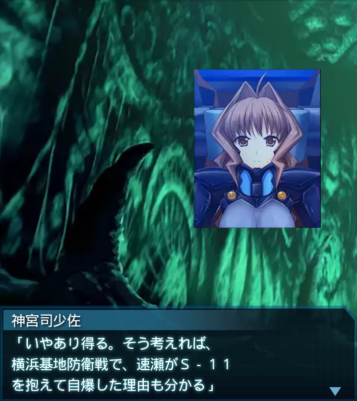

神宮司少佐
「――待て！妙だぞ…」『誰』
「少佐、どうしたんですか！？」神宮司少佐
「妙だ…有線で遠隔制御された起動タイマーの動きが止まった…。
まさかＢＥＴＡが破壊した…？」
『誰』
「え…起爆タイマーだけを狙って破壊するなんて…ＢＥＴＡがそんな
高度な真似を…？」

神宮司少佐
「いやあり得る。そう考えれば、横浜基地防衛戦で、速瀬がＳ－１１
を抱えて自爆した理由も分かる」
『誰』
「そうか…リモートで爆破すればよかったのにしなかったのは…
できなかったからなのか！？」
神宮司少佐
「何という事だ…。ここには、私を含め当時の詳細を知る者がいない。
それが仇になったか！」
神宮司少佐
「せめてその可能性を僅かでも疑っていれば、香月司令に問い質す
事もできたのにっっ！！」
『誰』
「世界の融合によって人類は、一度死んだ衛士を始め、多くの精鋭を
得ることが出来たが――」
『誰』
「最後の最後でこんな盲点があったとは――！！」
篁唯依
「わ、私が戻ります！周囲のＢＥＴＡを完全に殲滅しなかった
私の責任です！」
『誰』
「そんな訳があるか！戻るなんて死にに行くのと同じだ」
篁唯依
「装置を手動で作動させ、すぐに天井の穴に退避すれば…」
『誰』
「冷静になれ！無理に決まっているだろう！こんな時に夢みたいな
事を言うなッ！！」
篁唯依
「お言葉ですが！我々は夢の実現の為に死力を尽くして来たのです！
結果を追い続けて来たのです！」
篁唯依
「人類の未来を掴むという途方もない夢…それがもうすぐ叶う…。
その為ならばこの身など――」
篁唯依
「………………」
篁唯依
「あっ！『誰』大尉！！」神宮司少佐
「何をする気だ！戻れ『誰』大尉！！
部隊員達も何故後に続くッ！？」
『誰』
「篁中尉の言葉はその通りだ！だがそうだとしたら、これはオレの仕事
です！」
『誰』
「部下にまで強制する気はなかったが…ついて来た以上はひと頑張り
キッチリ働いてもらうぞ！！」